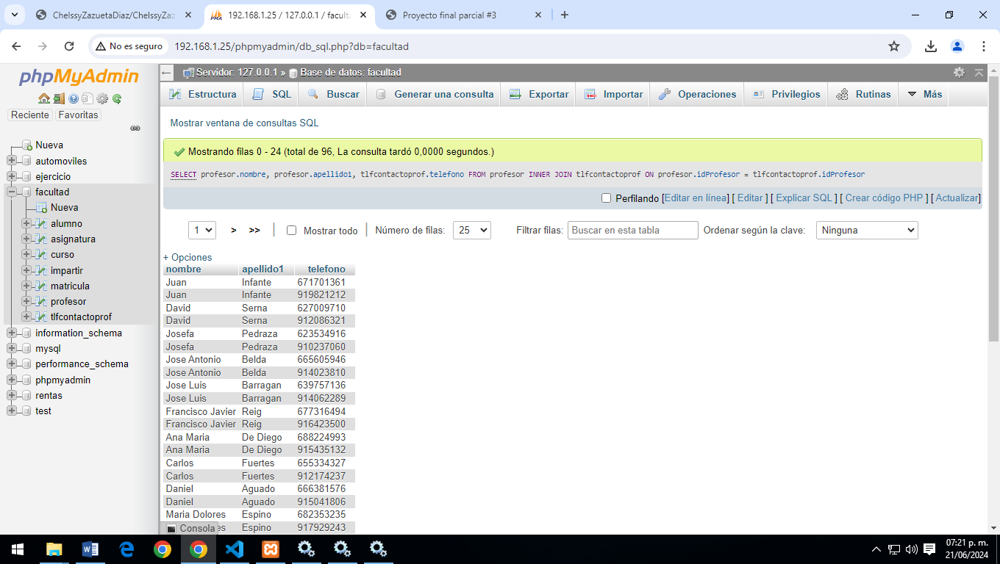

Consulta #1. Obtener el listado de todos los alumnos de la Facultad.
SELECT * FROM alumno;
Consulta #2. Obtener de curso(nombre) y las asignaturas que tiene.
SELECT curso.nombreDescriptivo, asignatura.nombre
FROM curso
INNER JOIN asignatura ON curso.idCurso = asignatura.curso
Consulta #3. Obten3.png" alt="img-fluid" styer el listado (NOMBRE Y APELLIDO) de alumnos que tengan beca.
SELECT alumno.nombre, alumno.apellido1 From alumno WHERE beca LIKE 'si'
Consulta #4. Obtener el listado de profesores (NOMBRE, APELLIDO), y su número de contacto.
SELECT profesor.nombre, profesor.apellido1, tlfcontactoprof.telefono FROM
profesor
INNER JOIN tlfcontactoprof
ON profesor.idProfesor = tlfcontactoprof.idProfesor

Consulta #5. Obtener listado de alumnos (TODOS LOS CAMPOS) que están inscritos a la asignatura de programación AS009.
SELECT alumno.*, asignatura.nombre
FROM alumno
INNER JOIN matricula ON matricula.idAlumno = alumno.idAlumno
INNER JOIN asignatura ON asignatura.idAsignatura = matricula.idAsignatura
WHERE asignatura.idAsignatura LIKE 'AS009';
Consulta #6. Obtener listado de profesores y asignaturas que imparten.
SELECT p.idProfesor, p.nombre AS nombre_profesor, p.apellido1 AS apellido1_profesor, p.apellido2 AS apellido2_profesor, a.idAsignatura, a.nombre AS nombre_asignatura FROM profesor p JOIN impartir i ON p.idProfesor = i.idProfesor JOIN asignatura a ON i.idAsignatura = a.idAsignatura ORDER BY p.idProfesor, a.idAsignatura
Consulta #7. Mostrar la asignatura que tiene más alumnos inscritos y su total.
SELECT a.idAlumno, a.nombre, a.apellido1, a.apellido2, a.email
FROM alumno a JOIN
matricula m ON a.idAlumno = m.idAlumno
JOIN impartir i ON m.idAsignatura = i.idAsignatura
WHERE i.idProfesor = ´PR048´;
Consulta #8. Obtener listado de alumnos que les da clase el profesor con ID PRO48(Jose Manuel), Sin importar en que asignatura esté inscrito.
SELECT c.idCurso, c.nombreDescriptivo AS nombre_curso, a.idAsignatura,
a.nombre AS nombre_asignatura, p.idProfesor, p.nombre AS
nombre_profesor, p.apellido1 AS apellido1_profesor,
p.apellido2 AS apellido2_profesor
FROM curso c JOIN asignatura a ON c.idCuso = a.curso
JOIN impartir i ON a.idAsignatura = i.idAsignatura
JOIN profesor p ON i.idProfesor = p.idProfesor
ORDER BY c.idCurso, a.idAsignatura, p.idProfesor;
Consulta #9. Obtener el listado de cursos, con asignatura, y el maestro que las imparte.
'
Consulta #10. Obtener listado de alumnos, con asignaturas que cursa, profesor que la imparte y curso al que pertenece.
'